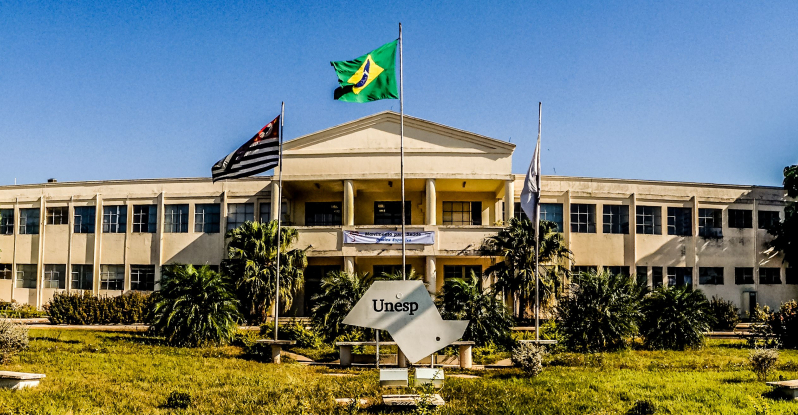

Sobre mim
Prazer me chamo Alex, Sou de Olímpia-SP.
Este site foi criado por mim mesmo no início da minha jornada de programador / desenvolvedor Full-Stack.
Atualmente (28/03/2021) sou um aluno de Ciências da Computação na UNESP.
Tenho o sonho de conseguir trabalhar nesta Área da tecnologia e um dia poder fazer uma Segunda faculdade ou um curso de especialização fora do meu país de origem.
Espero que no futuro eu possa olhar para esse meu site-portifólio e ser capaz de ver minha evolução no passar dos anos, sabendo que hoje meu hobby favorito é estudar as diversas linguagens de programação e os principais tópicos da computação.
Thank You for visiting my first Site.
Meus Projetos
Comecei na Área da computação em 2020, logo ainda não possuo grande feitos, em breve atualizarei essa seção com meus futuros principais trabalhos.
Enquanto isso é possível conferir no que estou trabalhando atualmente dando uma olhada no meu repositorio do Git Hub
- Curso Alura Imersao.dev - Certificado Criado
- Projeto Site-Portifólio (este site) - repositório com código disponivel Aqui.
UNESP
Foto: Campos do IBILCE UNESP Rio Preto -Minha Atual Faculdade
Ferramentas